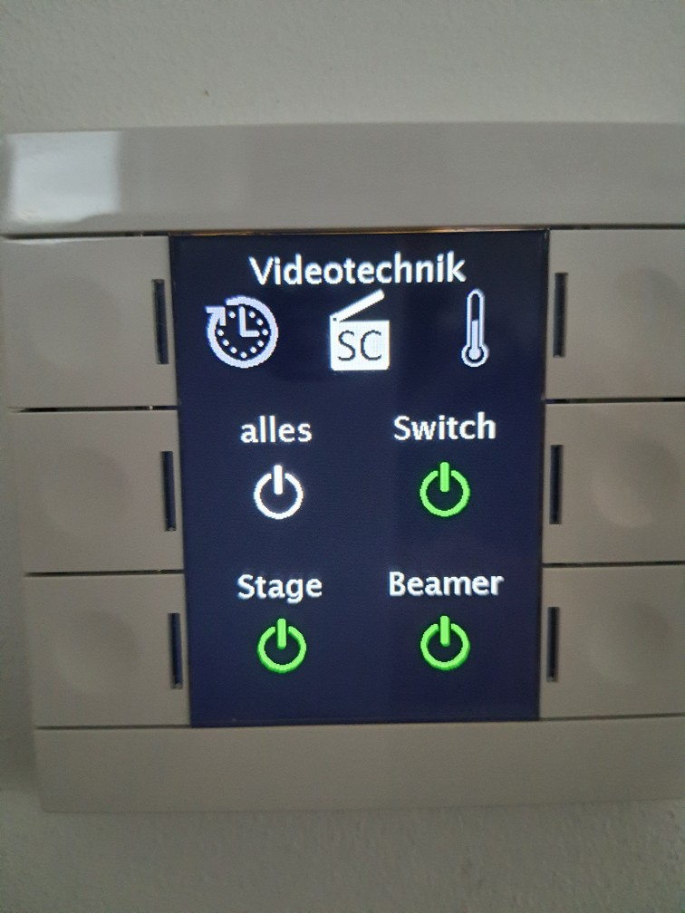
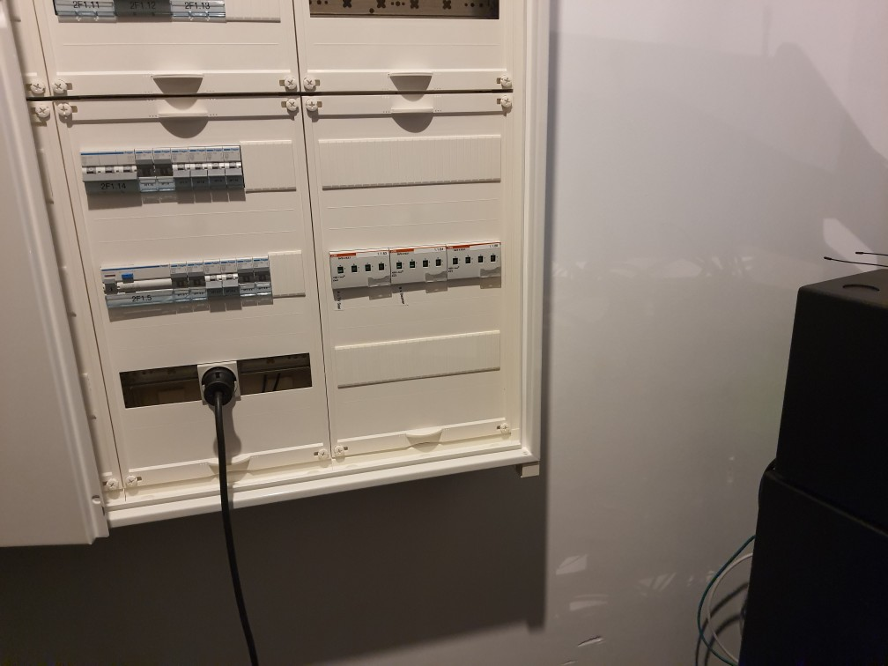
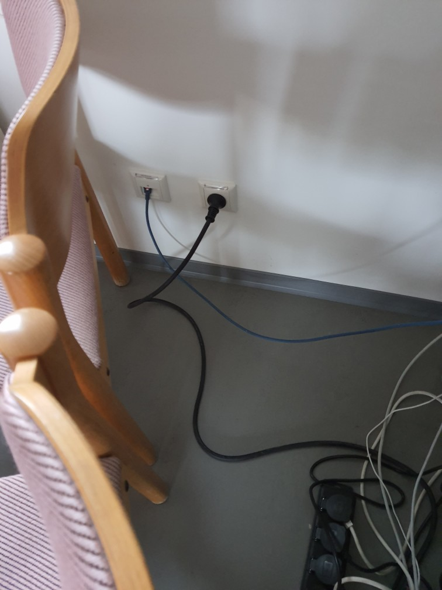
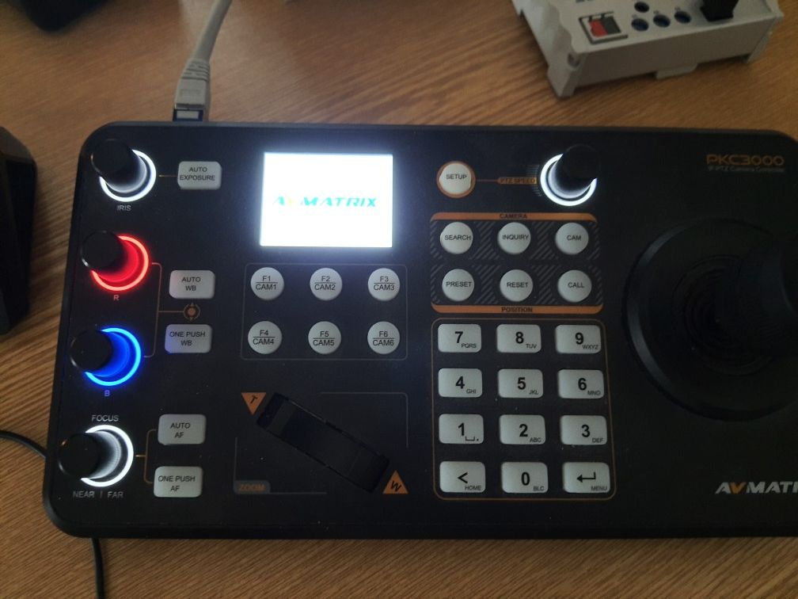
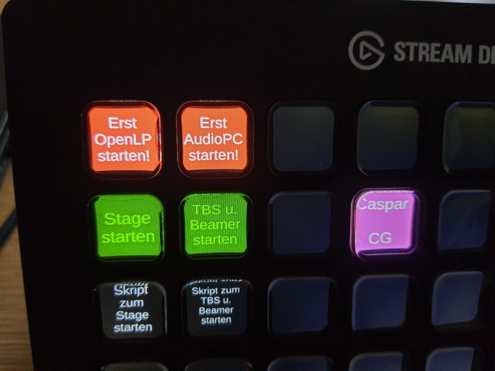
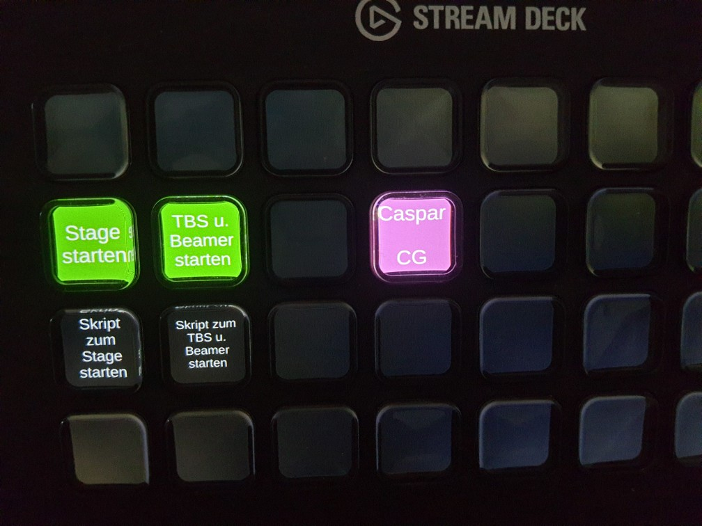

| 1 | 2 | 3 | 4 | 5 |
|---|---|---|---|---|
|  |  |  |  |  |
| zentralen Switch einschalten | Audio-Rac an Strom anschließen | Videotechnik an Strom anschließen | warten, bis AvMatrix Strom hat,dann CHVideo, CHAudio und CHPresentation einschalten | OpenLP starten, warten, bis CHAudio-PC fertig ist |
| 6 | ||||
|  | ||||
| für Band: Stage startenfür Laptop an Beamer: TBS u. Beamer startenVideotechnik allgemein: Caspar CG |